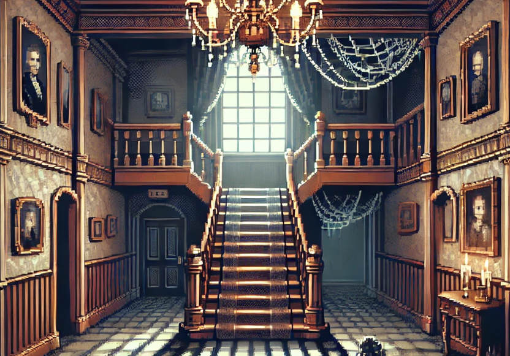

The Foyer

You make your way back to the foyer. Feeling the same cold winds before that sends a shiver down your spine. And seeing something that wasn't there before. You have to get out quick. What do you do next?